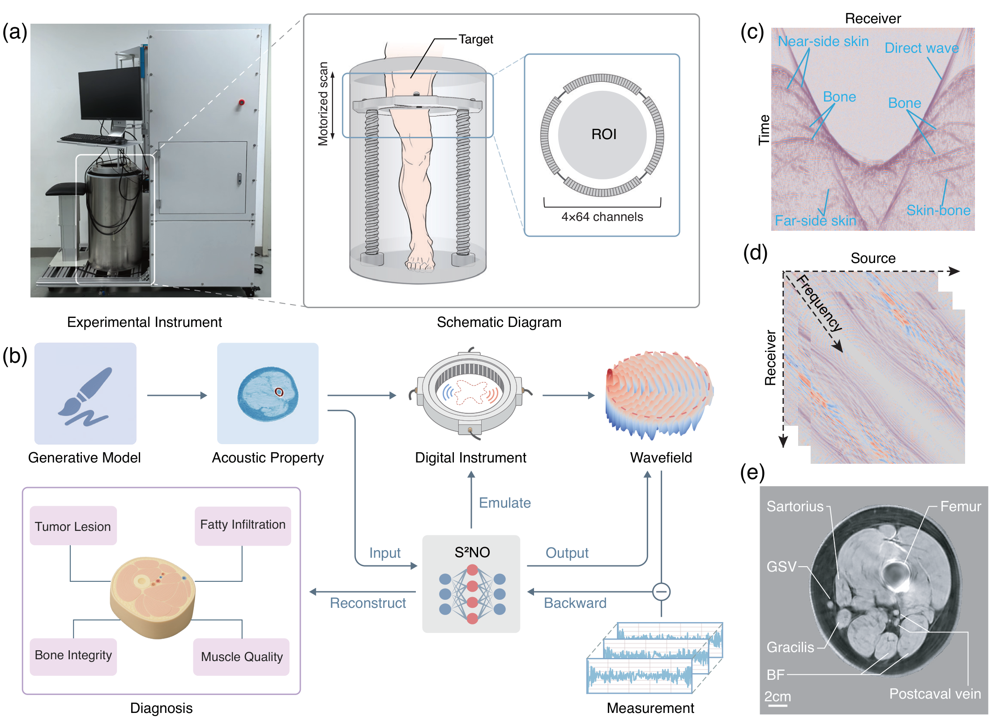
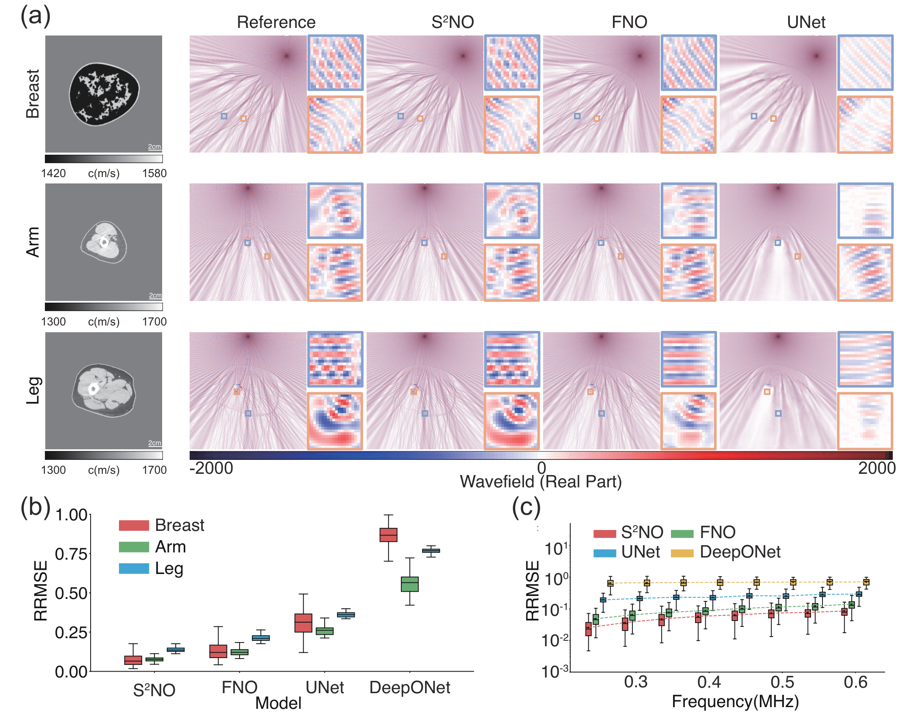
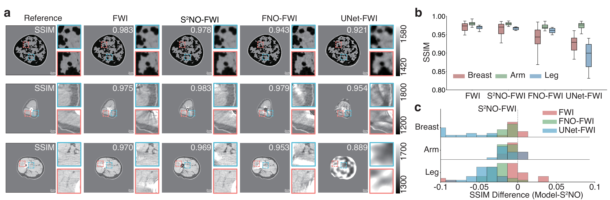
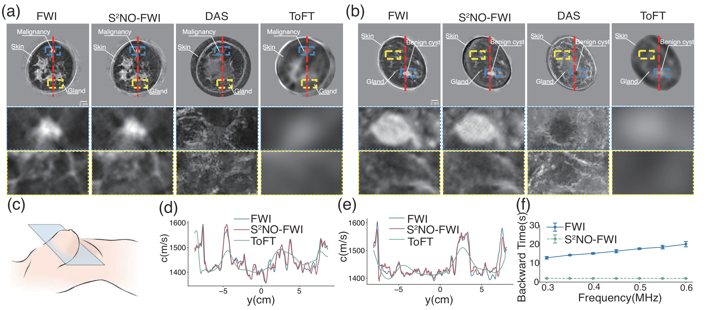
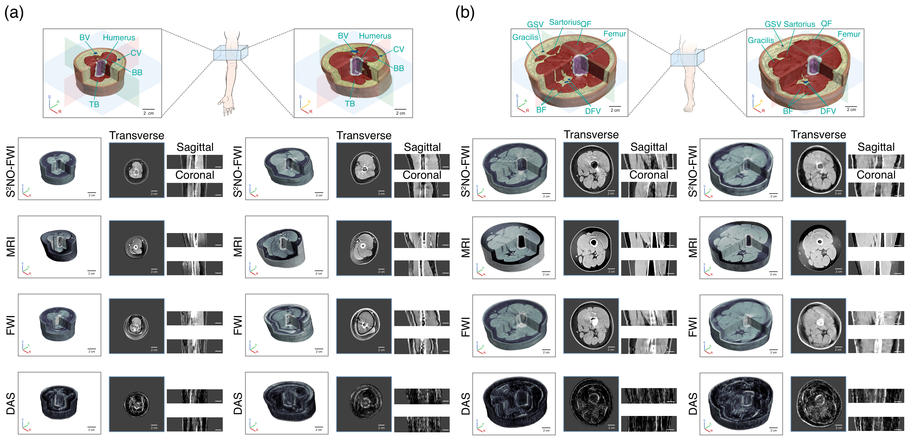

Ultrasound Tomography of Musculoskeletal Tissues with Generative Neural Physics
Generative Neural Physics Framework for Fast, High-Fidelity 3D Ultrasound Tomography · ICCP 2026 · IEEE TPAMI Special Issue
Abstract
Ultrasound Tomography (UT) is a radiation-free, high-resolution modality, but remains limited for musculoskeletal imaging due to the high computational cost and instability of full-waveform inversion in strongly scattering media. We propose a generative neural physics framework that couples generative networks with physics-informed neural simulation for fast, high-fidelity 3D UT. By learning a compact surrogate of ultrasonic wave propagation from a limited set of cross-modality images, our method merges the accuracy of wave modeling with the efficiency and stability of deep learning. This enables accurate quantitative imaging of in vivo musculoskeletal tissues, producing spatial maps of acoustic properties beyond reflection-mode images.
On synthetic and in vivo data of breasts, arms, and legs, we reconstruct 3D maps of tissue parameters in under ten minutes, with sensitivity to acoustic variations in musculoskeletal tissues and resolution comparable to MRI. By overcoming computational bottlenecks in strongly scattering regimes, this approach demonstrates the feasibility of quantitative UT for musculoskeletal imaging and advances its development toward future routine clinical use.

Figure 1. (a) Illustration of the experimental setup for ultrasound tomography. (b) Schematic overview of the proposed generative neural physics framework. (c) Time-domain amplitude data of multiple receiver channels and single source acquired from an in vivo human leg experiment. (d) Multiple discrete frequency-domain datasets obtained after preprocessing. The color represents the real part of the complex amplitude. (e) Transverse slices from the reconstruction of a female leg produced by the proposed framework. BF, biceps femoris; GSV, great saphenous vein.
Datasets
Welcome to OpenWaves
OpenWaves, a large-scale wave equation dataset designed to bridge the gap between theoretical equations and practical imaging applications.
This collection contains over 45 million frequency-domain wave simulations derived from anatomically realistic human phantoms
encompasseing three critical anatomical regions: breast, leg, arm.
OpenWaves establishes the first open-access repository for wave physics simulations
in medical imaging applications, developed by
PKU Computational Scientific Imaging Lab
We evaluated the accuracy of S²NO in simulating acoustic wavefields for synthetic breast, arm, and leg phantoms. S²NO outperformed FNO, DeepONet, and U-Net, accurately capturing complex scattering patterns at bone-muscle interfaces and within the femoral marrow cavity, while achieving 25–34× speedups over the CBS numerical solver.

Figure 3. (a) Wavefield predictions from S²NO and baseline models for breast, arm, and leg phantoms at 0.6 MHz. (b) Forward simulation errors at 0.6 MHz. (c) Comparison of forward simulation errors across frequencies of 0.25–0.6 MHz.
UT Image Reconstruction
S²NO-based FWI achieved reconstruction quality comparable to CBS and outperformed other neural operators across all phantom types. For arm and leg phantoms with strong scattering, S²NO more accurately modeled multiple scattering phenomena and effectively suppressed scattering-induced artifacts.

Figure 4. (a) Comparison between reference synthetic phantoms and reconstructions using different models. (b) Statistical summary of SSIM values. (c) Distribution of SSIM differences between S²NO and other methods.
In Vivo Breast Imaging
S²NO-based FWI captured detailed breast structures including skin, glandular tissue, tumors, and ductal networks, with parameter-free resolution of approximately 1.36 mm and 6× faster computation than conventional numerical solvers. The method distinguished malignant masses from benign lesions based on boundary morphology and sound speed contrast.

Figure 5. (a–b) Comparison of reconstructions of breasts with a spiculated malignancy and a benign cyst. (c) Schematic of cross-sectional data acquisition. (d–e) One-dimensional velocity profiles. (f) Computational time per iteration for traditional FWI and S²NO-FWI.
In Vivo 3D Arm and Leg Imaging
On in vivo arm and leg data from two volunteers, S²NO-FWI reconstructed 11-slice 3D volumes in under 10 minutes, closely matching MRI reference with parameter-free resolutions of 1.09 mm (arm) and 1.30 mm (leg). The method accurately delineated skin, muscle, blood vessels, and bone structures in strongly scattering musculoskeletal tissues.

Figure 6. Three-dimensional UT imaging of the arms and legs of a female subject (left) and a male subject (right). Top row: 3D UT reconstructions with color-coded anatomical segmentations. Bottom row: comparisons with MRI, conventional FWI, and DAS across transverse, sagittal, and coronal sections.
Featured Challenge
AI4S Cup - Prediction of Wavefield in Ultrasonic Computed Tomography
Use deep learning neural networks to accelerate the calculation of solutions for wave equations,
aiming to reduce computation time, ensure result accuracy, and achieve efficient ultrasound CT imaging.
AI4S Cup - Reconstruction of Wave Velocity in Ultrasonic Computed Tomography
Train neural networks to directly simulate the inversion process,
enabling the inference of the wave velocity distribution of the observed object directly
from wavefield observation data.
This is the OpenWaves.exe runtime interface example.
Configure the following parameters to control the
data generation process And set the speed path to your output dir in last step. The system will generate data and detailed log
files in your specified output directory.
BibTeX Citation
@article{zeng2025generative,
title={Generative neural physics enables quantitative volumetric ultrasound of tissue mechanics},
author={Zeng, Zhijun and Zheng, Youjia and Su, Chang and Wu, Qianhang and Hu, Hao and Dong, Zeyuan and Gao, Shan and Lv, Yang and Tang, Rui and Cui, Ligang and others},
journal={IEEE Transactions on Pattern Analysis and Machine Intelligence},
year={2025}
}